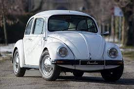
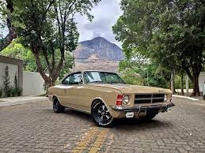
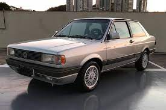
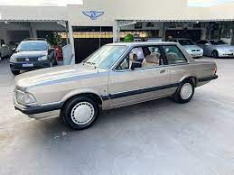
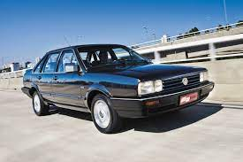

- Volkswagen Fusca
- Chevrolet Opala
- Volkswagen Voyage
- Ford Del Rey
- Ford Maverick
Volkswagen Fusca
Não tem jeito. Quando se fala em carro antigo, o Fusca é um dos mais lembrados desejados. Isso se reflete no índice de busca pelo besouro. Quatro em cada 10 carros com mais de trinta anos buscados na Mobiauto são da Volkswagem. E olha que não entram os modelos da fase Itamar (1993 a 1996).
Chevrolet Opala
Outro clássico na área para ser o vice-campeão entre os carros antigos mais buscados. Seis cilindos, SS, quatro portas, Diplomata, cupê... Não importa a configuração, a proposta colecionável do Opala fica evidente pelo valor médio dos anúncios, que passa dos R$ 50 mil.
Volkswagem Voyage
O sedã da marca alemã até surpreende ao fechar o pódio dos carros antigos mais famosos. Inclusive, já pode sinalizar que tem potencial de colecionável. Aqui, só estão contabilizados os modelos de uma única geração.
Ford Del Rey
Outra grata surpresa ente os carros antigos mais buscados é o sedã da Ford. E com preços ainda dentro de uma média aceitável. Até porque o Del Rey só fez sucesso realmente nos primeiros anos de vida após o lançamento, em 1982. O problema é que depois teve que concorrer com Chevrolet Monza e Volkswagem Santana.
Volkswagem Santana
Na época, logo ficou taxado nem como carro de tiozão, mas de vovõ mesmo. Fora o apelido maldoso de Corsário ("Corcel de otário"), já que nada mais era que um Corcel II - inclusive usou o mesmo motor do parente, além de sua plataforma da década de 1960. Mas não deixa de ser um veículo confortável e que trazia um acabameno bastante caprichado para a época.
